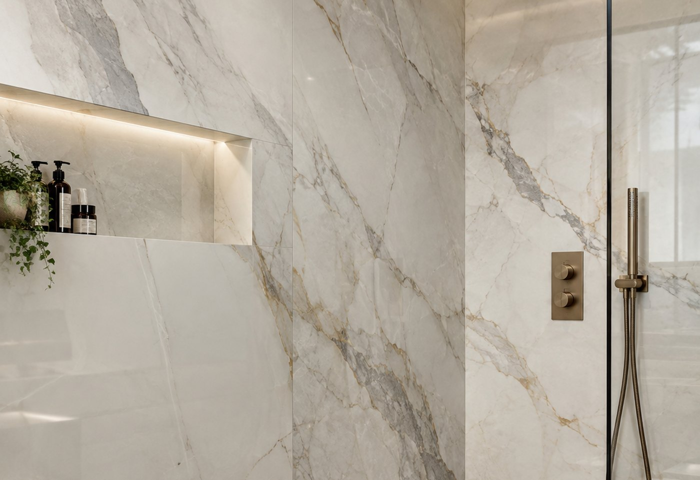
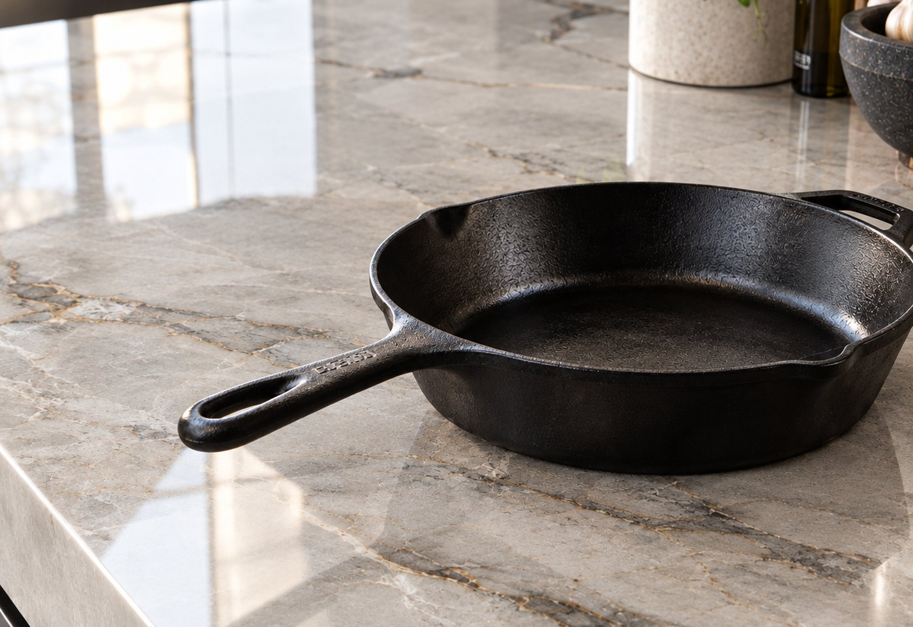
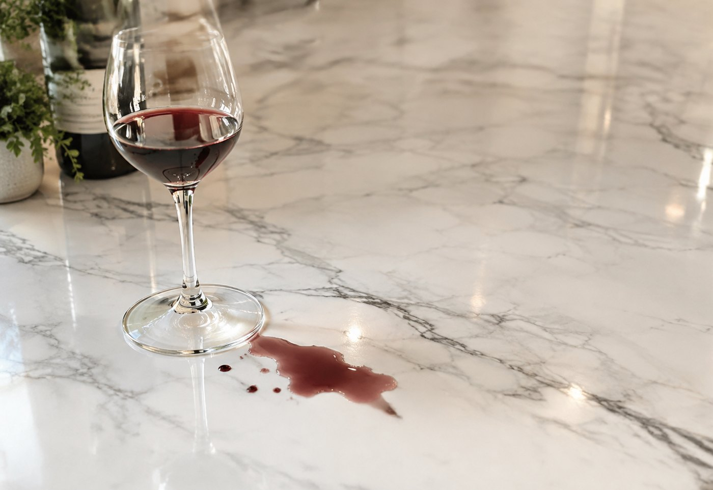
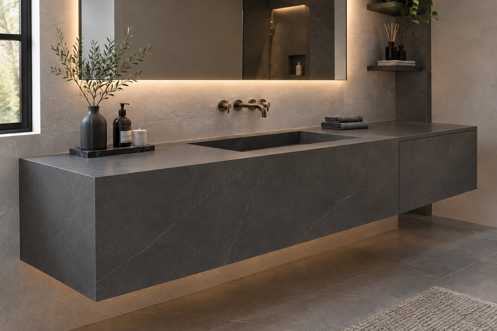
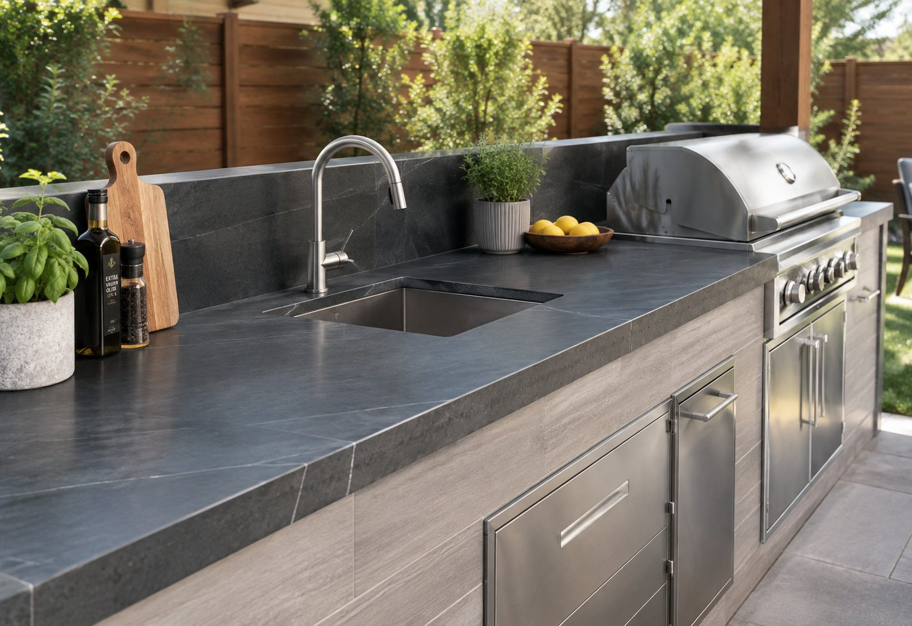
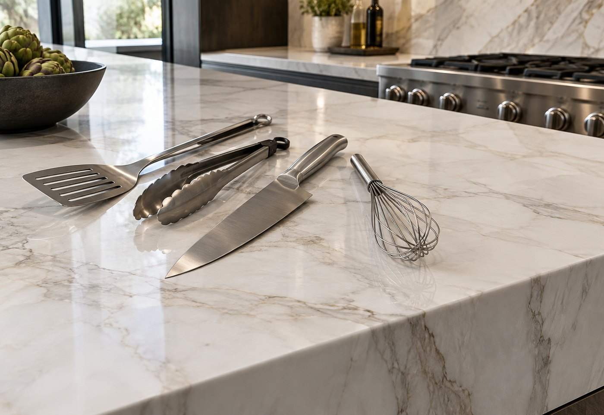
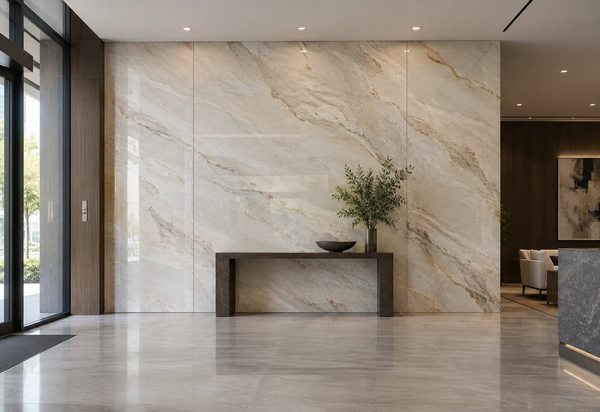

A tiled shower has grout lines every few inches. They collect soap, hold moisture, and discolor over time. Large-format porcelain covers a wall in one or two panels instead, so there's almost nothing for grime to catch on.

Porcelain is fired in a kiln at temperatures far beyond anything your kitchen will ever produce, so a pan straight off the burner does nothing to it. No trivet, no scorch mark, no scrambling for something to put underneath. Quartz is held together with resin and can mark from heat — this simply cannot.

The surface absorbs almost nothing, so spills sit on top instead of soaking in. Red wine, olive oil, coffee and citrus all wipe away with a cloth, even if you do not get to them right away. That also means no annual re-sealing bill and no worrying about a dinner party.

Natural stone needs sealing on a schedule, and forgetting is how countertops end up stained. Porcelain is dense enough that sealer does nothing for it, so there is no product to buy, no schedule to keep, and no maintenance appointment years down the road.

The color is fired all the way through the panel rather than printed on top, so direct sunlight will not fade it. That makes porcelain one of the very few surfaces that genuinely works outdoors — covered kitchens, grill surrounds, pool surrounds — as well as in sunrooms and window-heavy kitchens where quartz would eventually discolor.

It is hard enough that ordinary kitchen life leaves no mark on it. Keep using a cutting board, but do it to protect your knives rather than the counter — the porcelain is harder than the blade and will take the edge right off it.

A porcelain panel weighs a fraction of what a comparable stone slab does, which is exactly why it makes such an excellent solution for statement walls. Floor-to-ceiling feature walls, fireplace surrounds and double-height entries are all possible without the structural support a stone slab of that size would demand. In some cases it can even go straight over an existing surface.

Tell us the application. If porcelain is the wrong answer, we'll say so.
Ask us